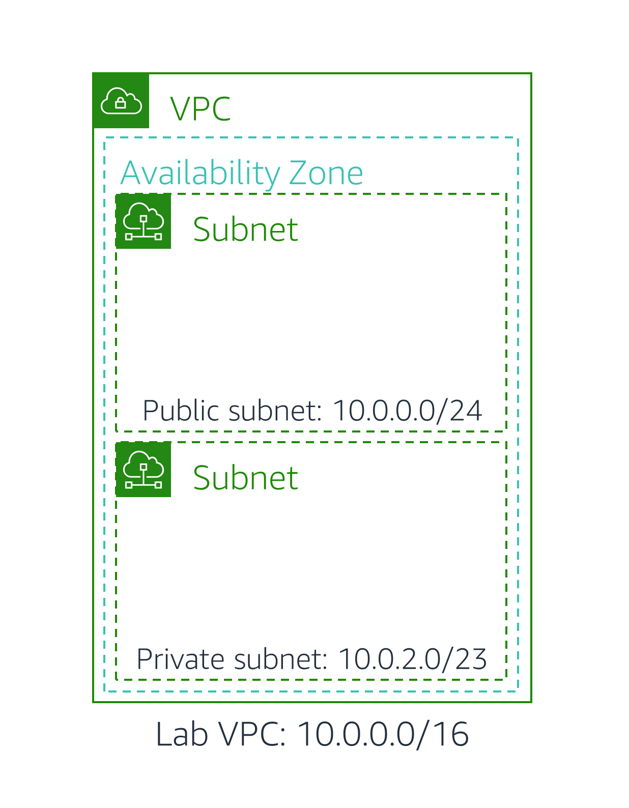
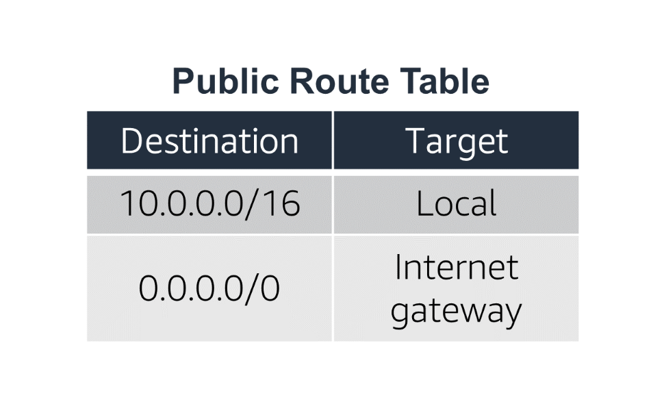
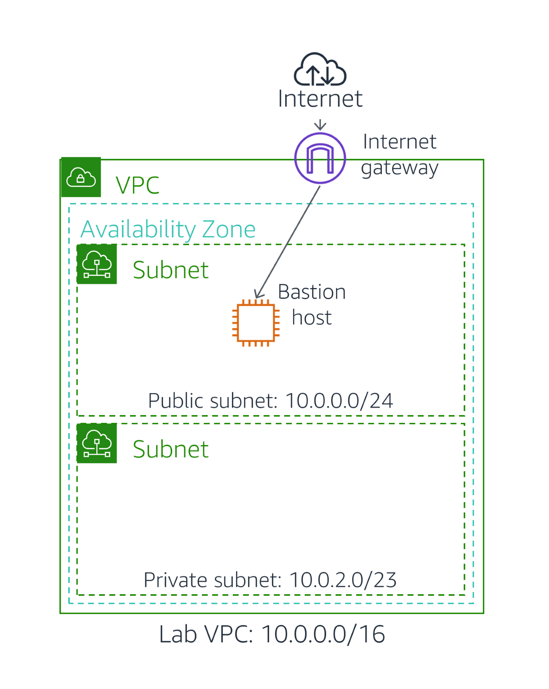
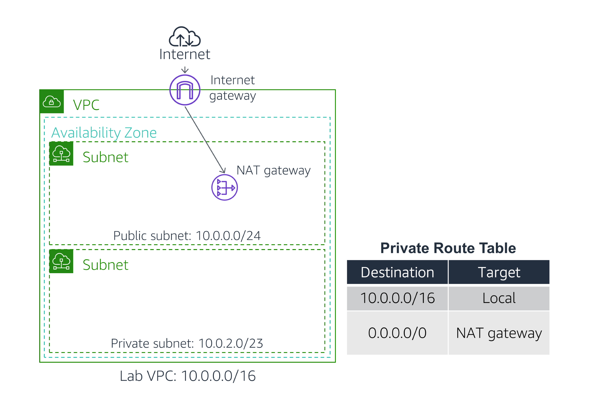

Lab - Configure VPC
Lab Overview
Traditional networking is hard — it involves equipment, cabling, complex configurations and specialist skills. Fortunately, Amazon VPC hides the complexity while making it easy to deploy secure private networks.
This lab shows you how to build your own Virtual Private Cloud and deploy resources.
The lab will demonstrate how to:
- Create a Virtual Private Cloud (VPC) that contains a private and public subnet, an Internet Gateway (IGW), and a Network Translation (NAT) Gateway.
- Configure Route Tables associated with a public subnet for internet-bound traffic to be directed to the IGW for direct internet access.
- Configure Route Tables associated with a private subnet for isolated resources to securely connect to the internet through a NAT Gateway.
- Launch a Bastion Host in a public subnet for resource-based secured access to the private subnet.
- Evaluate the operation of the private subnet's ability to communicate with the internet.

If you have time, an optional Challenge section will then have you create an Amazon EC2 instance in a private subnet and connect to it via the Bastion Server.
Duration
This lab will require approximately 45 minutes to complete.
Accessing the AWS Management Console
At the top of these instructions, click Start Lab to launch your lab.
A Start Lab panel opens displaying the lab status.
Wait until you see the message "Lab status: ready", then click the X to close the Start Lab panel.
At the top of these instructions, click AWS
This will open the AWS Management Console in a new browser tab. The system will automatically log you in.
Tip: If a new browser tab does not open, there will typically be a banner or icon at the top of your browser indicating that your browser is preventing the site from opening pop-up windows. Click on the banner or icon and choose "Allow pop ups."
Arrange the AWS Management Console tab so that it displays along side these instructions. Ideally, you will be able to see both browser tabs at the same time, to make it easier to follow the lab steps.
Please do not change the Region during this lab.
Task 1: Create a VPC
You will begin by creating a new Virtual Private Cloud (VPC).
A VPC is a virtual network dedicated to your AWS account. It is logically isolated from other virtual networks in the AWS cloud. You can launch AWS resources, such as Amazon EC2 instances, into the VPC. You can configure the VPC by modifying its IP address range, create subnets, and configure route tables, network gateways, and security settings.
In the AWS Management Console, on the Services menu, click VPC.
The VPC console offers a VPC Wizard that can automatically create several VPC architectures. However, in this lab you will be creating the VPC components manually.
In the left navigation pane, click Your VPCs.
A default VPC is provided so that you can launch resources as soon as you start using AWS. However, you will create your own Lab VPC.
The VPC will have a CIDR range of 10.0.0.0/16, which includes all IP address that start with 10.0.x.x — containing over 65,000 addresses. You will later divide the addresses into separate subnets. CIDR Calculators can help determine the correct set of IP addresses.
Click Create VPC and configure:
- Name tag:
Lab VPC - IPv4 CIDR block:
10.0.0.0/16 - Click Create VPC.
- Name tag:
In the left navigation pane, click Your VPCs. Select Lab VPC, ensuring that it is the only VPC selected.
Click Actions and select Edit DNS hostnames.
This option assigns a friendly DNS name to Amazon EC2 instances in the VPC, such as:
ec2-52-42-133-255.us-west-2.compute.amazonaws.com
Select Enable, then click Save changes
Any Amazon EC2 instances launched into the VPC will now automatically receive a DNS hostname. You can also add a more meaningful DNS Name (eg app.company.com) later by using Amazon Route 53.
Task 2: Create Subnets
A subnet is a sub-range of IP addresses within the VPC. AWS resources can be launched into a specified subnet. Use a public subnet for resources that must be connected to the internet, and use a private subnet for resources that are to remain isolated from the internet.
In this task, you will create a public subnet and a private subnet:

Create a Public Subnet
The public subnet will be used for internet-facing resources.
In the left navigation pane, click Subnets.
Click Create subnet and configure:
- VPC ID: Lab VPC
- Subnet name:
Public Subnet - Availability Zone: Select the first AZ in the list
- IPv4 CIDR block:
10.0.0.0/24 - Click Create subnet
The VPC has a CIDR of 10.0.0.0/16, which includes all 10.0.x.x IP addresses. The subnet you just created has a CIDR of 10.0.0.0/24, which includes all 10.0.0.x IP addresses. They might look similar, but the subnet is smaller than the VPC due to the /24 in the CIDR range.
You will now configure the Public Subnet to automatically assign a public IP address for all Amazon EC2 instances launched within it.
Select Public Subnet.
Click Actions and select Edit subnet settings, then:
- Select Enable auto-assign public IPv4 address
- Click Save
Even though this subnet has been named Public Subnet, it is not yet public. A public subnet must have an internet gateway, which you will attach in the next task.
Create a Private Subnet
The private subnet will be used for resources that are to remain isolated from the internet.
Use what you have just learned to create another Subnet with:
- VPC ID: Lab VPC
- Subnet name:
Private Subnet - Availability Zone: Select the first AZ in the list
- IPv4 CIDR block:
10.0.2.0/23 - Click Create subnet
The CIDR block of 10.0.2.0/23 includes all IP addresses that start with 10.0.2.x and 10.0.3.x. This is twice as large as the public subnet because most resources should be kept in private subnets, unless they specifically need to be accessible from the internet.
Your VPC now has two subnets. However, the VPC is totally isolated and cannot communicate with resources outside the VPC. You will next configure the Public Subnet to connect to the internet via an Internet Gateway.
Task 3: Create an Internet Gateway
An internet gateway is a horizontally scaled, redundant, and highly available VPC component that allows communication between instances in a VPC and the internet. It imposes no availability risks or bandwidth constraints on network traffic.
An internet gateway serves two purposes:
- To provide a target for route tables to connect to the internet
- To perform network address translation (NAT) for instances that have been assigned IPv4 Public IP addresses
In this task, you will create an internet gateway so that internet traffic can access the public subnet.
In the left navigation pane, click Internet Gateways.
Click Create internet gateway and configure:
- Name tag:
Lab IGW - Click Create internet gateway
You can now attach the internet gateway to your Lab VPC.
- Name tag:
In the left navigation pane, click Internet Gateways. Select Lab IGW, ensuring that it is the only gateway selected.
Click Actions then Attach to VPC and configure:
- VPC: Lab VPC
- Click Attach internet gateway
Your Public Subnet now has a connection to the internet. However, to route traffic to the internet you must also configure the public subnet route table so that it will use the internet gateway.
Task 4: Configure Route Tables
A route table contains a set of rules, called routes, that are used to determine where network traffic is directed. Each subnet in a VPC must be associated with a route table; the table controls the routing for the subnet. A subnet can only be associated with one route table at a time, but you can associate multiple subnets with the same route table.
To use an internet gateway, a subnet's route table must contain a route that directs internet-bound traffic to the internet gateway. If a subnet is associated with a route table that has a route to an internet gateway, it is known as a public subnet.
In this task, you will:
- Create a public route table for internet-bound traffic
- Add a route to the route table to direct internet-bound traffic to the internet gateway
- Associate the public subnet with the new route table
In the left navigation pane, click Route Tables.
Several route tables will be displayed, but there is only one route table associated with Lab VPC. This route table routes traffic locally, so it is called a Private Route Table.
Select the route table that shows Lab VPC in the VPC column.
Click in the Name column and enter a name of:
Private Route Tablethen click Save.Click the Routes tab in the lower half of the page.
There is currently only one route. It shows that all traffic destined for 10.0.0.0/16 (which is the range of the Lab VPC) will be routed locally. This allows all subnets within a VPC to communicate with each other.
You will now create a new Public Route Table to send public traffic to the internet gateway.
Click Create route table and configure:
- Name tag:
Public Route Table - VPC: Lab VPC
- Click Create route table.
- Name tag:
In the left navigation pane, click Route Tables. Select Public Route Table, ensuring that it is the only route table selected.
In the Routes tab, click Edit routes
You will now add a route to direct internet-bound traffic (0.0.0.0/0) to the internet gateway.
Click Add route then configure:
- Destination:
0.0.0.0/0 - Target: Select Internet Gateway then select Lab IGW from the list
- Click Save changes.
The final step is to associate this new Route Table with the Public Subnet.
- Destination:
Click the Subnet associations tab.
Click Edit subnet associations
Select the row with Public Subnet.
Click Save associations
The Public Subnet is now public because it has a route table entry that sends traffic to the internet via the internet gateway.

To summarize, you can create a public subnet as follows:
- Create an internet gateway
- Create a route table
- Add a route to the route table that directs 0.0.0.0/0 traffic to the internet gateway
- Associate the route table with a subnet, which therefore becomes a public subnet
Task 5: Launch a Bastion Server in the Public Subnet
A Bastion Server (also known as a Jump Box) is an Amazon EC2 instance in a Public Subnet that is securely configured to provide access to resources in a Private Subnet. Systems Operators can connect to the Bastion Server and then jump into resources in the Private Subnet.

On the Services menu, click EC2.
In the left navigation pane, select Instances. Click Launch instance and configure:
Step 1 (Choose AMI):
- AMI: Amazon Linux 2
Step 2 (Choose Instance Type):
- Instance Type: t3.micro
Step 3 (Configure Instance Details):
- Network: Lab VPC
- Subnet: Public Subnet
Step 4 (Add Storage):
- Use default settings (no changes)
Step 5 (Add Tags):
- Click Add Tag
- Key:
Name - Value:
Bastion Server
Step 6 (Configure Security Group):
- Use default settings (no changes)
Step 7 (Review and Launch):
- Launch
Step 8 (Select an existing key pair or craete a new key pair)
- Select I acknowledge that I have access to the corresponding private key file, and that without this file, I won't be able to log into my instance.
- Click Launch Instances
- Click View Instances
The Bastion Server will be launched in the Public Subnet. Continue with the next task — there is no need to wait for the instance to be running.
Task 6: Create a NAT Gateway
Resources in a private subnet do not have internet connectivity. This is intentional because it protects the resources from being accessed from the internet.
However, sometimes resources in a private subnet need to communicate with the internet to download software updates and access internet services. Thus, you will want to give resources outbound connectivity to the internet while keeping them protected from inbound access.
This can be accomplished with a NAT Gateway that is launched in the public subnet:

In this task, you will launch a NAT Gateway and configure the Private Route Table to send traffic to the NAT Gateway.
On the Services menu, click VPC.
In the left navigation pane, click NAT Gateways.
Click Create NAT gateway then configure:
- Subnet: Public Subnet
- Click Allocate Elastic IP
- Click Create a NAT gateway
You will now configure the Private Subnet to send internet-bound traffic to the NAT Gateway.
The Route Tables will already be displayed.
In the left navigation pane, click Route Tables. Select Private Route Table.
Click the Routes tab in the lower half of the page.
The route table is currently showing only a single entry, which will route traffic locally within the VPC. You will add an additional route to send internet-bound traffic via the NAT Gateway.
Click Edit routes
Click Add route then configure:
- Destination:
0.0.0.0/0 - Target: Select NAT Gateway then select nat- from the list
- Click Save changes
Resources in the Private Subnet that wish to communicate with the internet will now have their network traffic directed to the NAT Gateway, which will forward the request to the internet. Responses will flow through the NAT Gateway back to the Private Subnet.

- Destination:
Optional Task: Test the Private Subnet
This challenge is optional and is provided in case you still have lab time remaining.
In this challenge, you will launch an Amazon EC2 instance in the Private Subnet and confirm that it can communicate with the internet.
Launch an Instance in the Private Subnet
First, you will launch an Amazon EC2 instance in the Private Subnet.
On the Services menu, click EC2.
Click Launch instance and configure:
Step 1 (Choose AMI):
- AMI: Amazon Linux 2
Step 2 (Choose Instance Type):
- Instance Type: t3.micro
Step 3 (Configure Instance Details):
Network: Lab VPC
Subnet: Private Subnet (Not the Public Subnet!)
User Data (Under Advanced Details): Paste this script:
# Turn on password authentication for lab challengeecho 'lab-password' | passwd ec2-user --stdinsed -i 's|[#]*PasswordAuthentication no|PasswordAuthentication yes|g' /etc/ssh/sshd_configsystemctl restart sshd.service
This script will permit login via password. This is simply to make the lab steps easier and is not recommended for normal instance deployments.
Step 4 (Add Storage):
- Use default settings (no changes)
Step 5 (Add Tags):
- Click Add Tag
- Key:
Name - Value:
Private Instance
Step 6 (Configure Security Group):
- Use default settings (no changes)
Step 7 (Review and Launch):
- Launch
Step 8 (Select an existing key pair or craete a new key pair)
- Select I acknowledge that I have access to the corresponding private key file, and that without this file, I won't be able to log into my instance.
- Click Launch Instances
- Click View Instances
Log into the Bastion Server
The instance you just launched is in the Private Subnet, so it is not possible to directly log into the instance. Instead, you will first log into the Bastion Server in the Public Subnet and then log into the Private Instance from the Bastion Server.
Select the Bastion Server and copy the IPv4 Public IP (shown in the lower half of the page) to your clipboard.
The following instructions now vary slightly depending on whether you are using Windows or Mac/Linux.
Windows Users: Using SSH to Connect
These instructions are for Windows users only.
If you are using macOS or Linux, skip to the next section.
In the AWS Management Console, on the Services menu, click EC2.
In the left navigation pane, click Instances.
Select the Command Host.
Copy the IPv4 Public IP from the Description in the lower pane.
Read through the three bullet points in this step before you start to complete the actions, because you will not be able see these instructions when the Details panel is open.
- Click on the Details drop down menu above these instructions you are currently reading, and then click Show. A Credentials window will open.
- Click on the Download PPK button and save the labsuser.ppk file. Typically your browser will save it to the Downloads directory.
- Then exit the Details panel by clicking on the X.
Download needed software.
- You will use PuTTY to SSH to Amazon EC2 instances. If you do not have PuTTY installed on your computer, download it here.
Open putty.exe
Configure PuTTY to not timeout:
- Click Connection
- Set Seconds between keepalives to
30
This allows you to keep the PuTTY session open for a longer period of time.
Configure your PuTTY session:
- Click Session
- Host Name (or IP address): Paste the Public IPv4 value you copied to your clipboard earlier in the lab.
- Back in PuTTy, in the Connection list, expand SSH
- Click Auth (don't expand it)
- Click Browse
- Browse to and select the lab#.ppk file that you downloaded
- Click Open to select it
- Click Open
Click Yes, to trust the host and connect to it.
When prompted login as, enter:
ec2-userThis will connect you to the EC2 instance.
Mac and Linux Users
These instructions are for Mac/Linux users only. If you are a Windows user, skip ahead to the next task.
In the AWS Management Console, on the Services menu, click EC2.
In the left navigation pane, click Instances.
Select the Command Host.
Copy the IPv4 Public IP from the Description in the lower pane.
Read through the three bullet points in this step before you start to complete the actions, because you will not be able see these instructions when the Details panel is open.
- Click on the Details drop down menu above these instructions you are currently reading, and then click Show. A Credentials window will open.
- Click on the Download PEM button and save the labsuser.pem file.
- Then exit the Details panel by clicking on the X.
Open a terminal window, and change directory
cdto the directory where the labsuser.pem file was downloaded.For example, run this command, if it was saved to your Downloads directory:
xxxxxxxxxxcd ~/DownloadsChange the permissions on the key to be read only, by running this command:
xxxxxxxxxxchmod 400 labsuser.pemReturn to the terminal window and run this command (replace <public-ip> with the Public IPv4 value you copied to your clipboard earlier in the lab):
xxxxxxxxxxssh -i labsuser.pem ec2-user@<public-ip>Type
yeswhen prompted to allow a first connection to this remote SSH server.Because you are using a key pair for authentication, you will not be prompted for a password.
Log into the Private Instance
You should now be logged into the Bastion Server, which is located in the Public Subnet.
You will now connect to the Private Instance, which is located in the Private Subnet.
In the EC2 console, select Private Instance (and deselect any other instances).
Copy the Private IPs (shown in the lower half of the page) to your clipboard.
Note that this IP address is a private IP address starting with 10.0.2.x or 10.0.3.x. This address is not reachable directly from the internet, which is why you first logged into the Bastion Server. You will now log into the Private Instance.
Run this command into the PuTTY/ssh session, replacing PRIVATE-IP with the IP Address you just copied to your clipboard:
xxxxxxxxxxssh PRIVATE-IPThe command you run should look similar to : ssh 10.0.2.123
If you are prompted with "Are you sure", enter:
yesWhen prompted for a password, enter:
lab-passwordYou should now be connected to the Private Instance. This was accomplished by first connecting to the Bastion Server (in the Public Subnet), then connecting to the Private Instance (in the Private Subnet).
Test the NAT Gateway
The final part of this challenge is to confirm that the Private Instance can access the internet.
You will do this by running the ping command.
Paste this command:
xxxxxxxxxxping -c 3 amazon.comYou should see a result similar to:
xxxxxxxxxxPING amazon.com (176.32.98.166) 56(84) bytes of data.64 bytes from 176.32.98.166 (176.32.98.166): icmp_seq=1 ttl=222 time=79.2 ms64 bytes from 176.32.98.166 (176.32.98.166): icmp_seq=2 ttl=222 time=79.2 ms64 bytes from 176.32.98.166 (176.32.98.166): icmp_seq=3 ttl=222 time=79.0 msThis indicates that the Private Instance successfully communicated with amazon.com on the internet.
The Private Instance is in the Private Subnet, so the only way this was possible was by going via the NAT Gateway. This confirms that your network configuration was successful!
Lab Complete
Congratulations! You have completed the lab.
Click End Lab at the top of this page and then click Yes to confirm that you want to end the lab.
A panel will appear, indicating that "DELETE has been initiated... You may close this message box now."
Click the X in the top right corner to close the panel.
Additional Resources
For more information about AWS Training and Certification, see https://aws.amazon.com/training/. Your feedback is welcome and appreciated. If you would like to share any suggestions or corrections, please provide the details in our AWS Training and Certification Contact Form. © 2022 Amazon Web Services, Inc. and its affiliates. All rights reserved. This work may not be reproduced or redistributed, in whole or in part, without prior written permission from Amazon Web Services, Inc. Commercial copying, lending, or selling is prohibited.